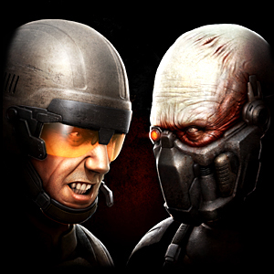

Welcome to Enemy Territory: QUAKE Wars

In this guide you will find detailed information on all aspects of the game from in-game content, to joining and hosting servers, stat tracking and help. Please take a moment to get familiar with the guide as it may come in handy now or later when you have questions about Enemy Territory: QUAKE Wars.
To review game related content, please select one of the subjects on the table to the left.
For technical help select the Help Guide at the top of the page. For news, updates and forums checkout the Community link also at the top of the page.
Required Viewing with:
Internet Explorer 7 or higher
Firefox